CSS ¿qué es, realmente?
CSS, Hojas de estilo en cascada, no es realmente un lenguaje de programación, tampoco es un lenguaje de marcado. Es un lenguaje de hojas de estilo, es decir, te permite aplicar estilos de manera selectiva a elementos en los documentos HTML.
Por ejemplo, para seleccionar todos los elementos, párrafo en una página HTML y poner el texto o fuente de color azul, aplicamos lo siguiente.
- p {
- color: blue ; color azul
- }
- Pero antes de seguir avanzado en el tema hay, cosas que aprender.
Una regla CSS consta de un selector y un bloque de declaración.
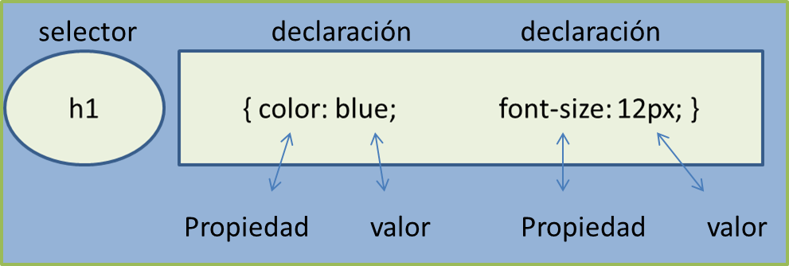Declaración, es la unidad básica de CSS, Cada declaración incluye un nombre de propiedad CSS y un valor, separados por dos puntos " : "
En otras palabras, una declaración es la respuesta a una pregunta. ¿De qué color debería ser este fondo? ¿Qué tan grande la fuente en este párrafo? etc. Y es exactamente así cómo defines el aspecto de tu documento, estableciendo declaraciones, una para cada propiedad que necesitas definir.
Cuando se provee más de una declaración en el mismo bloque, cada declaración debe ser separada, por un punto y coma " ; " y los bloques de declaración están rodeados por llaves. Este es el motivo por el cual los autores normalmente usan un punto y coma al final de cada declaración.
En el siguiente ejemplo, un conjunto de declaraciones, son presentadas utilizando este formato.
{
background-color: bisque; (color de fondo)
color: brown ; (color de fuente)
width: 50%; (ancho)
height: auto; altura
}
HTML-CSS-JavaScript
¿Qué es un selector?
Como su mismo nombre indica, un selector CSS es una referencia a uno o varios elementos HTML, escrito generalmente desde código CSS (también pueden utilizarse desde ciertos lugares en JavaScript). Es una forma rápida y cómoda de hacer referencia a elementos individuales o grupos de elementos, para posteriormente darle estilo.
Cuando estamos en una fase de aprendizaje muy inicial con CSS, es habitual dar estilo con selectores muy sencillos, con el tiempo aprendemos a utilizar selectores más complejos que nos permitirán hacer más cosas y escribir menos.
Existe un amplio conjunto de selectores disponibles. En las secciones siguientes, veremos algunos de los selectores más básicos, ya que éstos presentarán las ideas sobre las cuales otros selectores se constituirán.
EL SELECTOR UNIVERSAL
El selector universal, usa el carácter asterisco* selecciona todos los elementos HTML de la página.
Ejemplo: La siguiente regla CSS afectará a todos los elementos HTML de la página:
- Selector universal
- * {
- font-size: 18px ; Tamaño de fuente 18 px
- text-align: center ; texto alineado centro
- color: blue ; color azul
- }
Página, Google Chrome
Titulo 2
Mi párrafo
Mi primer párrafo
Mi segundo párrafo
La siguiente regla CSS afectará a todos los elementos HTML de la página
HTML-CSS-JavaScript
SELECTORES DE ELEMENTO
El selector de elemento selecciona todos los elementos HTML con las mismas definiciones de estilo.
Con este selector puedes aplicar declaraciones, por ejemplo, a todos los párrafos (elementos p), todos los ítems de listas (elemento li) o todos los vínculos (elementos a) de un documento. El siguiente ejemplo provee declaraciones para todos los elementos h2, p, y una lista desordenada ul del documento.
- Selectores de elemento
- h2 {
- color: brown ;
- text-align: center ;
- }
- p {
- color: black ;
- text-align: center ;
- }
- ul {
- list-style: none ; estilo de lista: ninguno
- margin: 0 ; margen 0
- padding: 0 ; relleno 0
- }
Página, Google Chrome
Titulo 1
Titulo 2
Mi párrafo
Mi primer párrafo
Mi segundo párrafo
- Hola mundo
- Hola mundo
- Hola mundo
- Hola mi mundo
- Hola mi mundo
- Hola mi mundo
HTML-CSS-JavaScript
SELECTORES DE ID
El selector de id usa el atributo id de un elemento HTML para seleccionar un elemento específico.
La identificación de un elemento es única dentro de una página, por lo que el selector de identificación se usa para seleccionar un elemento único. Ejemplo
<h2 id ="subtítulos" >
Titulo 2 </h2>
<p id = "comentario" >
Mi párrafo </p>
<footer id = "pie" >
Fin de la historia</footer>
Para seleccionar un elemento con una identificación específica, escriba un carácter hash #, seguido de la identificación del elemento. Ejemplo: La siguiente regla CSS se aplicará al elemento HTML con id="subtítulos":
- Selectores id
- #subtítulos {
- text-align: center;
- color: green ;
- font-size: 30px ;
- }
Página, Google Chrome
Titulo 2
Mi párrafo
Mi primer párrafo
HTML-CSS-JavaScript
SELECTORES DE CLASE
Una clase es un concepto introducido por CSS con el propósito de agrupar declaraciones y aplicarlas a un conjunto personalizado de elementos, independientemente de su tipo o naturaleza.
El selector de clase selecciona elementos HTML con un atributo de clase específico. Ejemplo.
<h1
class = "encabezado" > Titulo 1</h1>
<div class = "menu" >
</div>
<main class = "contenedor" >
</main>
<div class = "menu" >
<h1> Titulo 1
</h1>
<p > Mi párrafo
</p>
<h2 > Titulo 2
</h2>
<p> > Mi primer párrafo
</p>
</div>
A la class menu, la usaremos para los ejemplos
Para seleccionar elementos con una class, escriba un carácter de punto, ( . ) seguido del nombre de la class.
- .menu {
- background-color: green ;
- width: 50%;
- border: 2px solid blue;
- height: auto ;
- }
Titulo 1
Mi párrafo
Titulo 2
Mi primer párrafo
También puede especificar qué elementos, pueden ser afectados por una class.
- .menu p{
- color: white ;
- }
- .menu h2{
- color: white ;
- font-size: 30px; ;
- }
Titulo 1
Mi párrafo
Titulo 2
Mi primer párrafo
Los elementos HTML también pueden referirse a más de una class.
En este ejemplo, el elemento <h2>
se diseñará de acuerdo con class="titulo" y class = "subtítulos":
<h2 class = "título subtítulos" > Hola mundo </h2>
SELECTORES AVANZADOS
CSS permite realizar combinaciones con los cuatro selectores básicos descriptos arriba, haciendo referencia a las relaciones entre padres, hijos, hermanos, descendientes y más. Con algunas de estas herramientas podrías, por ejemplo, aplicar declaraciones a todos los párrafos que son hijos directos del cuerpo (body). Además, provee otros selectores basados en la composición de los atributos o los estados que un elemento presenta, permitiendo a los autores aplicar declaraciones a, por ejemplo, todos los elementos input que son de tipo "radio" (atributo type).
A pesar de que algunos de los más nuevos son pobremente soportados, estos selectores avanzados son extremadamente útiles en el desarrollo de sitios web complejos. Sin embargo, no serán tratados en este tutorial debido a su alcance. Esta sección es meramente informativa.
HTML-CSS-JavaScript
Hay tres formas de aplicar estilos CSS en un documento HTML
(1) Agregando estilos en línea a elementos HTML.
EL ATRIBUTO STYLE
El uso del atributo style es la forma más fácil y directa de aplicar declaraciones de estilo a un elemento. Este atributo puede tener como contenido, cualquier número de declaraciones de estilo, separadas unas de otras por un punto y coma " ; ". Como style es un atributo global, puede ser usado en cualquier elemento de HTML.
En el primer ejemplo, las propiedades de estilo son aplicadas a un elemento <h1>, mediante el atributo style. Puedes comprobarlo copiando el código y pegando en Visual Studio Code
<h1 style ="color: green ; font-size: 50px ;" > Hola mundo </h1>
Lo que le indica atreves del atributo style, es quiero la fuente de color verde y el tamaño de fuente de 50 px.
En el segundo ejemplo algunas propiedades de estilo son aplicadas a un par de elementos, <p> <b> mediante el atributo style.
<p style ="color: white ; background-color: grey;" >Aplicando en HTML<b style ="font-size: 40px;"> Estilo, CSS </b> con el atributo style. </p>
A pesar de toda su simplicidad e inmediatez, el uso de este método rompe de alguna manera uno de los principales beneficios de CSS: la posibilidad de crear declaraciones de estilo que pueden ser reutilizadas en tantos elementos como sea posible, algo que se traduce en flexibilidad y portabilidad. Solo imagínate teniendo que aplicar este mismo estilo a cientos de elementos en tus documentos.
Esto no significa que no sea útil. De hecho, puede ser muy pertinente usarlo cuando necesitas aplicar un estilo a un solo elemento y por única vez. De cualquier modo, las alternativas siguientes resolverán el problema mencionado en el párrafo anterior.
HTML-CSS-JavaScript
(2) Incrustando CSS en una etiqueta de estilo.
EL ELEMENTO STYLE
El elemento <style> es un contenedor para declaraciones de estilo. Dentro de este elemento podemos arrojar cualquier número de declaraciones de estilo, siempre y cuando estén correctamente organizadas en grupos de selectores. En otras palabras, todos los ejemplos vistos en la sección sobre selectores, pueden ser ubicados en medio de las etiquetas de este elemento. Sólo puede ser declarado en la sección del encabezado <head> del documento.
El siguiente ejemplo muestra un extracto de un documento donde el elemento style está siendo utilizado para proveer atributos a algunos elementos en el cuerpo <body>. Más específicamente, dos selectores de tipo proveen reglas de estilo para los elementos <h2> y <p>. Puedes comprobarlo copiando el código y pegando en Visual Studio Code
- Visual Studio Code
- <head>
- <title>HTML-CSS-JavaScript<title>
- <style>
- h2{
- background-color: grey ;
- color: white ;
- text-align: center ;
- margin: 0 ;
- }
- p{
- background-color: green ;
- color: white ;
- text-align: center ;
- margin: 0 ;
- }
- </style>
- </head>
- <body>
- <h2> Css style <h2>
- <p> Aplicando estilo a documentos html <p>
- </body>
Css style
Aplicando estilo a documentos html
Página, Google Chrome
- Elemento h2, le estamos aplicando
- color de fondo gris
- color de fuente blanco
- texto alineado al centro
- margen 0
- Elemento p, le estamos aplicando
- color de fondo verde
- color de fuente blanco
- texto alineado al centro
- margen 0
Ahora, con este método podemos compartir declaraciones entre los muchos elementos presentes en una misma página. Pero, ¿es posible tener declaraciones de estilo inter-documentos? Esto es algo que sólo se puede lograr con nuestro último enfoque.
HTML-CSS-JavaScript
3-Vinculando a un archivo de hoja de estilo separado.
ARCHIVOS EXTERNOS
La ventaja de utilizar un archivo externo para almacenar información de estilo reside en la posibilidad de compartir ese archivo entre un gran número de documentos. Cuando un documento es cargado, el navegador detecta la referencia al archivo de hojas de estilo, cargando y aplicando los estilos como si fueran parte del documento.
Un archivo externo de hojas de estilo puede ser insertando en el documento con el elemento <link>, con en el atributo type, con el valor de "text/css" y el URI del archivo de hojas de estilo en el atributo href . Ten presente que el elemento <link> solo puede estar ubicado en el bloque del elemento <head>, del documento.
<head>
<title>HTML-CSS-JavaScript<title>
<link rel ="stylesheet" type = "text/css" href = "estilo.css" >
</head>
<body>
Pasos para crear un archivo css externo
Para más organización vamos a crear primero, una carpeta nueva, en este caso la voy a llamar CSS.
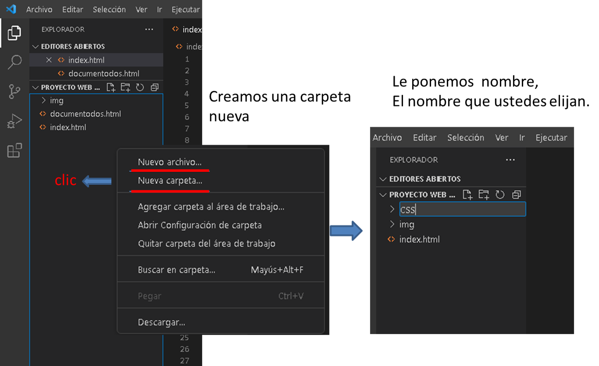Dentro de la carpeta CSS vamos a crear el archivo css externo, lo pueden llamar como ustedes deseen, el que le sea más conveniente para su organización de trabajo.
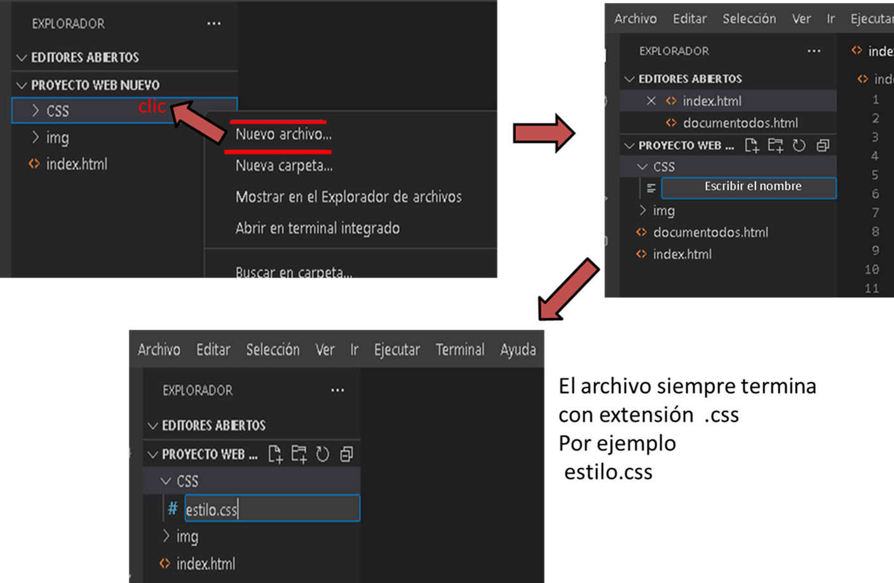Ya creado el archivo css, lo insertamos con el elemento <link> en el documento HTML. Si observan en href van a observar que tiene la ruta de ubicación, la carpeta CSS que creamos y el archivo externo estilo.css. De esta manera ya creamos el archivo css externo para poder dar Style a nuestros documentos HTML.
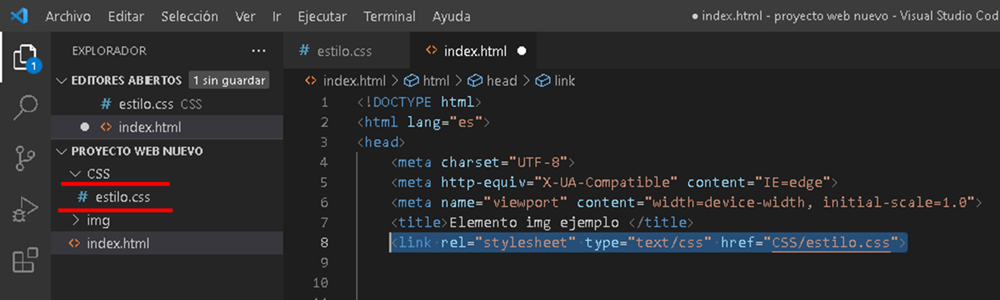Ejemplo: aplicando Style con archivo css externo
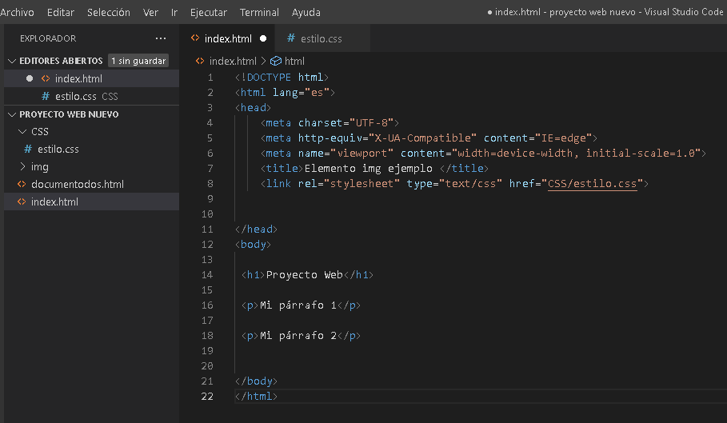 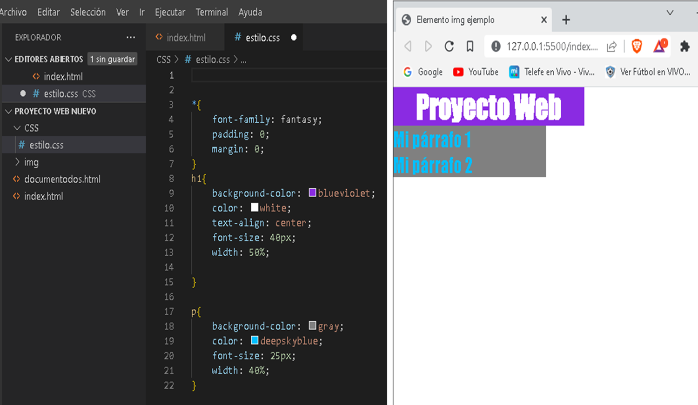¿Qué es el box model y para qué se utiliza?
El modelo de cajas o "box model" es seguramente la característica más importante del lenguaje de hojas de estilos CSS, ya que condiciona el diseño de todas las páginas web. El modelo de cajas es el comportamiento de CSS que hace que todos los elementos de las páginas se representen mediante cajas rectangulares.
El modelo de caja CSS
En CSS, el término "modelo de caja" se usa cuando se habla de diseño y diseño. El modelo de caja CSS es esencialmente una caja que envuelve cada elemento HTML. Consiste en: márgenes, bordes, relleno y el contenido real. La siguiente imagen ilustra el modelo de caja:
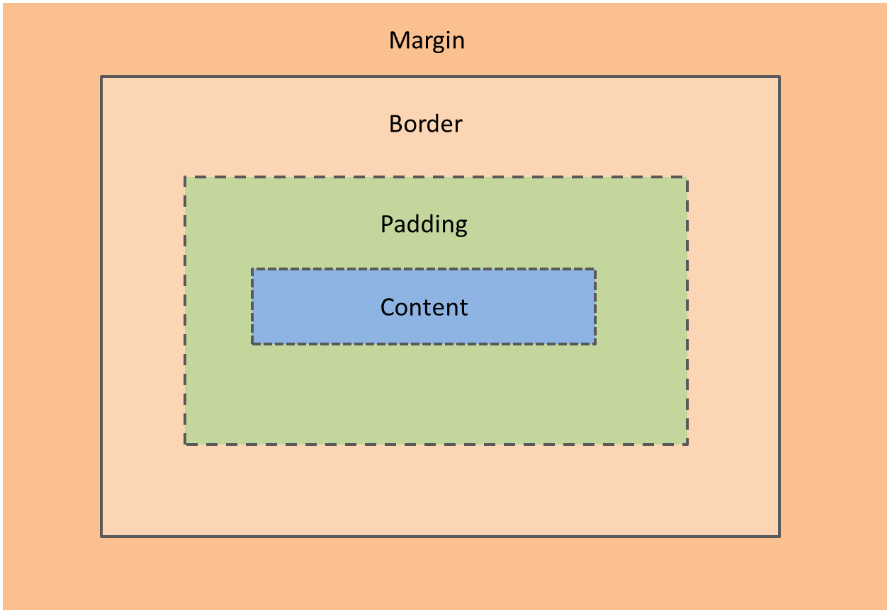Explicación de las diferentes partes:
- Content- Contenido: el contenido del cuadro, donde aparecen el texto y las imágenes.
- Padding- Relleno: borra un área alrededor del contenido. El relleno es transparente.
- Border- Borde: un borde que rodea el relleno y el contenido.
- Margin- Margen: borra un área fuera del borde. El margen es transparente.
El modelo de caja nos permite agregar un borde alrededor de los elementos y definir el espacio entre los elementos.
Ejemplo del modelo de una caja:
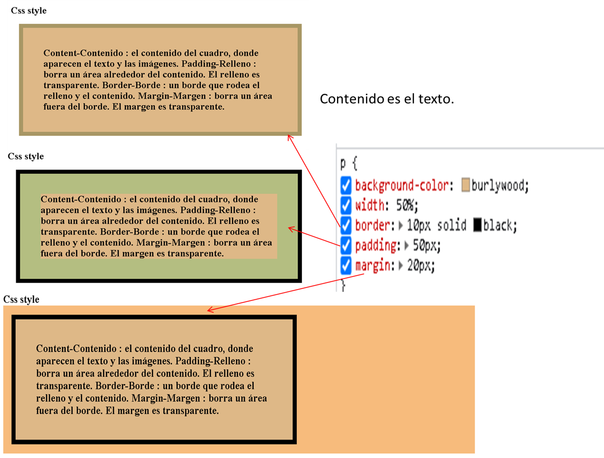Ancho y alto de un elemento
Para establecer correctamente el ancho y el alto de un elemento en todos los navegadores, deben saber cómo funciona el modelo de caja.
Importante: cuando establece las propiedades de ancho y alto de un elemento con CSS, simplemente establece el ancho y el alto del área de contenido . Para calcular el tamaño completo de un elemento, también debe agregar relleno, bordes y márgenes.
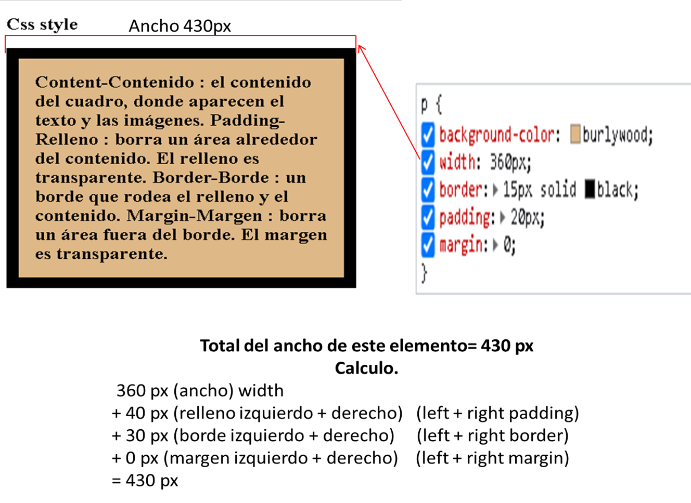El ancho total y la altura total de un elemento deben calcularse de la siguiente manera:
Ancho total del elemento = ancho + relleno izquierdo + relleno derecho + borde izquierdo + borde derecho + margen izquierdo + margen derecho.
Altura total del elemento = altura + relleno superior + relleno inferior + borde superior + borde inferior + margen superior + margen inferior.
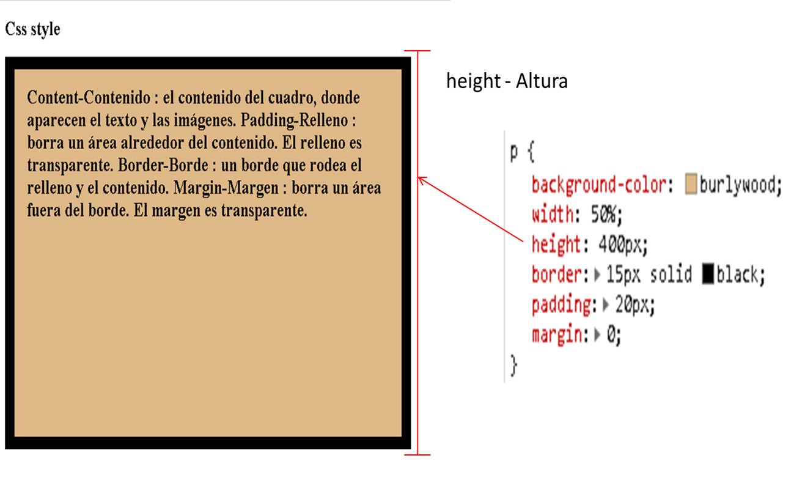Cajas en bloque y en línea
En CSS, en general, hay dos tipos de cajas: cajas en bloque y cajas en línea. Estas características se refieren al modo comó se comporta la caja en términos de flujo de página y en relación con otras cajas de la página:
Si una caja se define como un bloque, se comportará de las maneras siguientes:
- La caja fuerza un salto de línea al llegar al final de la línea.
- La caja se extenderá en la dirección de la línea para llenar todo el espacio disponible que haya en su contenedor. En la mayoría de los casos, esto significa que la caja será tan ancha como su contenedor, y llenará el 100% del espacio disponible.
- Se respetan las propiedades width y height.
- El relleno, el margen y el borde mantienen a los otros elementos alejados de la caja.
A menos que decidamos cambiar el tipo de visualización a en línea, elementos como los encabezados (por ejemplo, <h1>) y todos los elementos <p> usan por defecto block como tipo de visualización externa.
Si una caja tiene una visualización externa de tipo inline, entonces:
- La caja no fuerza ningún salto de línea al llegar al final de la línea.
- Las propiedades width y height no se aplican.
- Se aplican relleno, margen y bordes verticales, pero no mantienen alejadas otras cajas en línea.
- Se aplican relleno, margen y bordes horizontales, y mantienen alejadas otras cajas en línea.
El elemento,<a> que se utiliza para los enlaces, y los elementos <span>, <em> y <strong> son ejemplos de elementos que se muestran en línea por defecto.
Etiquetas Inline - Block
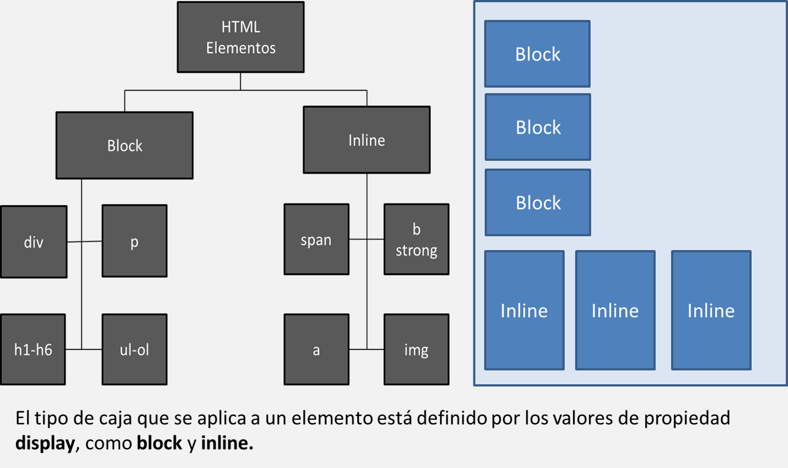Nota: Le voy colocar un link para que investiguen más de box model y las propiedades al final del artículo.
Fuentes CSS
La selección de fuentes es importante
Elegir la fuente correcta tiene un gran impacto en cómo los lectores experimentan un sitio web, puede crear una fuerte identidad para su marca, agrega valor a su texto, es importante usar una fuente que sea fácil de leer. También es importante elegir el color y el tamaño de texto correctos para la fuente.
Familias de fuentes genéricas
- En CSS hay cinco familias de fuentes genéricas:
- Las fuentes Serif: tienen un pequeño trazo en los bordes de cada letra. Crean una sensación de formalidad y elegancia.
- Las fuentes sans-serif: tienen líneas limpias (sin pequeños trazos adjuntos). Crean un aspecto moderno y minimalista.
- Fuentes monoespaciadas: aquí todas las letras tienen el mismo ancho fijo. Crean un aspecto mecánico.
- Las fuentes cursivas: imitan la escritura humana.
- Las fuentes de fantasía: son fuentes decorativas/divertidas.
Todos los diferentes nombres de fuentes pertenecen a una de las familias de fuentes genéricas.
Nota: En las pantallas de las computadoras, las fuentes sans-serif se consideran más fáciles de leer que las fuentes serif.
En CSS, usamos la font-family propiedad para especificar la fuente de un texto. Si el nombre de la fuente es más de una palabra, debe estar entre comillas, como: "Times New Roman".
Sugerencia: La font-family propiedad debe contener varios nombres de fuentes como un sistema "alterno", para garantizar la máxima compatibilidad entre navegadores y sistemas operativos. Comience con la fuente que desee y termine con una familia genérica (para permitir que el navegador elija una fuente similar en la familia genérica, si no hay otras fuentes disponibles). Los nombres de las fuentes deben estar separados por comas.
- p{
- font-family: "Times New Roman", Times, serif;
- }
Fuentes CSS de Google
Si no desea utilizar ninguna de las fuentes estándar en HTML, puede utilizar Google Fonts, es de uso gratuito y tiene más de 1000 fuentes para elegir.
Cómo usar las fuentes de Google Simplemente agregue un enlace de hoja de estilo especial en la sección head y luego consulte la fuente en el CSS.
El siguiente link lo redirige a Google Fonts. Google Fonts
Ejemplo, si nos fijamos vamos a visualizar el link extraído de Google Fonts. En el siguiente ejemplo, explico cómo hacerlo.
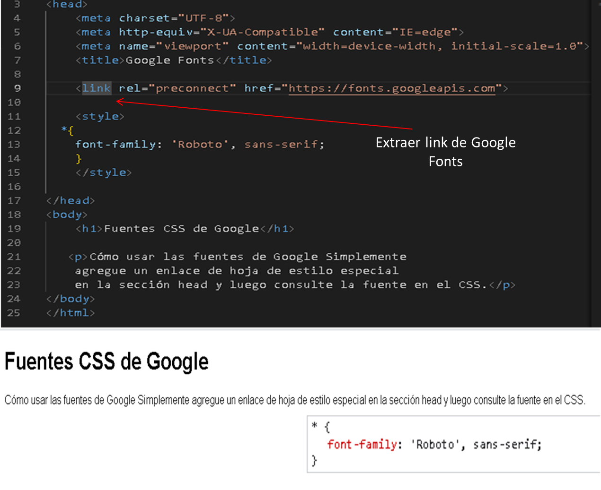Una vez que estemos en Google Fonts en la página principal, vamos a tener seleccionar que tipo de fuente vamos a usar, luego nos redirige a lo que sería la, siguiente imagen.
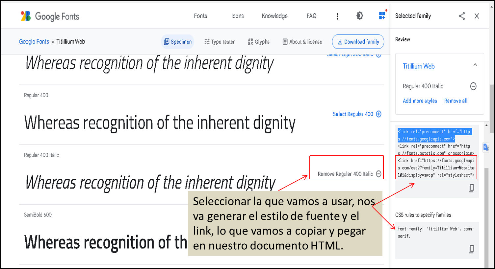Espero que este artículo te haya ayudado. Gracias. ¡ Feliz Programación !.